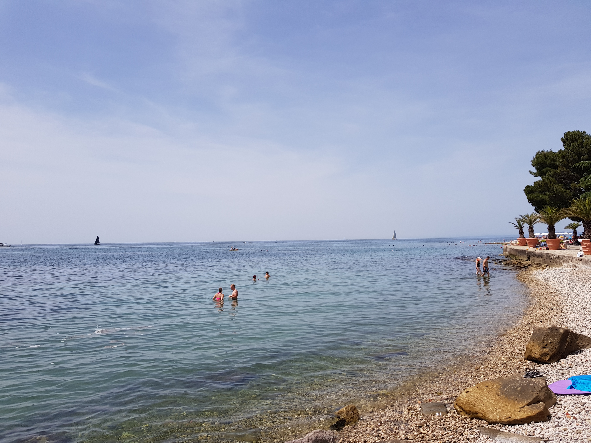

Koper
Koper is a port city in Slovenia, on the country's Adriatic coastline. Its medieval old town centers around Titov Trg, a square with Venetian-influenced landmarks such as the Praetorian Palace and a Gothic-style loggia, while nearby Da Ponte Fountain is a replica of Venice's famed Rialto Bridge. Rebuilt many times, the circa-12th-century Cathedral of the Assumption features a tall campanile with sweeping bay views.